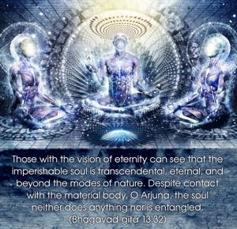
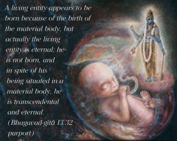
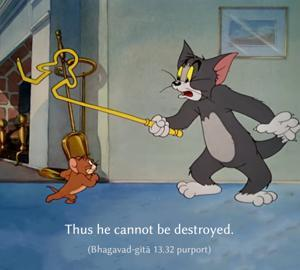
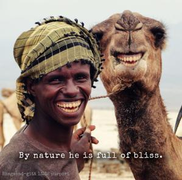

Those with the vision of eternity can see that the imperishable soul is transcendental, eternal, and beyond the modes of nature. Despite contact with the material body, O Arjuna, the soul neither does anything nor is entangled.




A living entity appears to be born because of the birth of the material body, but actually the living entity is eternal; he is not born, and in spite of his being situated in a material body, he is transcendental and eternal. Thus he cannot be destroyed. By nature he is full of bliss. He does not engage himself in any material activities; therefore the activities performed due to his contact with material bodies do not entangle him.